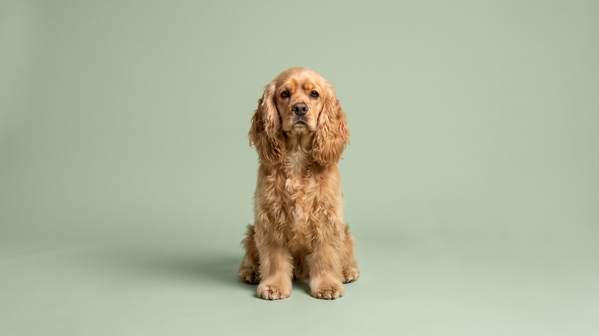

Американский кокер-спаниель часто сопротивляется расчёсыванию после резкого движения щёткой или болезненного выдёргивания колтуна. Менять реакцию удобно через короткие занятия на одном участке шерсти. Ниже даны подходящие инструменты, порядок приучения, признаки спокойствия и чек-лист проверки после процедуры.
🐾 Всё о вашем питомце — в одном приложении
AI-ветеринар, дневник здоровья, напоминания об уходе и прививках. Бесплатно, в Telegram и MAX.
Установить AnimaLife → Открыть в MAX →
У вас iPhone? AnimaLife есть в App Store
У породы длинная шерсть на ушах, груди, животе и ногах. Она путается там, где пряди трутся друг о друга или о снаряжение. Особое внимание требуют места за ушами, подмышки, внутренняя поверхность бёдер и шерсть под ошейником. Даже при аккуратной стрижке эти участки нужно осматривать ежедневно.
Одной щётки по верхнему слою недостаточно. Она разглаживает видимую часть, а маленькие узлы у кожи остаются. После расчёсывания проверьте пряди металлическим гребнем: он должен проходить от кожи к концам волос без рывков. Сначала разберите узлы пальцами, затем берите щётку. Так нагрузка на кожу будет меньше.
Выберите для занятий время после спокойной прогулки, когда собака уже обследовала дом и готова стоять рядом. Начинайте со спины и боков, где контакт обычно привычнее. Уши, лапы и живот подключайте позже отдельными короткими этапами.
Подготовьте нескользкий коврик, щётку с закруглёнными зубьями, металлический гребень и мягкое лакомство. Положите инструменты рядом заранее. Во время первых занятий достаточно двух минут, затем длительность увеличивайте по реакции собаки.
Если пёс отворачивает голову к руке, прижимает уши или пытается отойти, вернитесь к более лёгкому этапу. Пауза до напряжения работает лучше удержания. Для поддержания привычки проводите краткий контакт ежедневно, а полное расчёсывание выполняйте по состоянию шерсти.
После процедуры разделите шерсть на нескольких участках и посмотрите на кожу. В спокойном состоянии собака продолжает принимать лакомство, свободно дышит и не вырывает лапу. Гребень проходит пряди, щётка не собирает новые узлы за ушами и под снаряжением.
Плотный колтун у кожи безопаснее показать грумеру. Покраснение, мокнущий участок или резкая реакция на обычное касание требуют осмотра ветеринара. Не продолжайте процедуру через такую реакцию. Спокойное расчёсывание складывается из предсказуемых движений и своевременной остановки.
🐾 Спросите AI-ветеринара о вашей собаки
AnimaLife отвечает на вопросы о кошках и собаках круглосуточно, ведёт дневник здоровья и напоминает о прививках. Бесплатно, без записи.
Открыть AnimaLife → Открыть в MAX →
У вас iPhone? AnimaLife есть в App Store
🐾 Понравился разбор?
Подпишитесь на канал — каждый день разбираем по одному тревожному симптому у кошек и собак: что в пределах нормы, а когда пора к врачу. Подпишитесь, чтобы не пропустить разбор, который может спасти здоровье вашего питомца.
Материал носит информационный характер и не заменяет очную консультацию ветеринара.